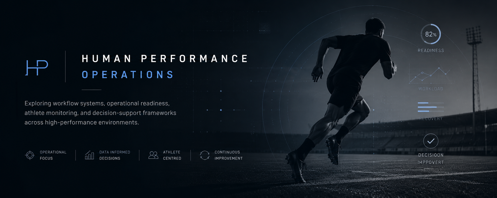

Exploring how structured workflows, monitoring systems, and operational decision-support can improve consistency across high-performance environments.
Azure Functions + Logic Apps workflow exploring operational decision-support around readiness monitoring and workflow orchestration.
Structured macrocycle thinking around preparation phases, athlete progression, and RTP reintegration logic.
Building operational systems around human performance environments where communication, workflows, readiness, and decision-support operate more consistently across long seasons.